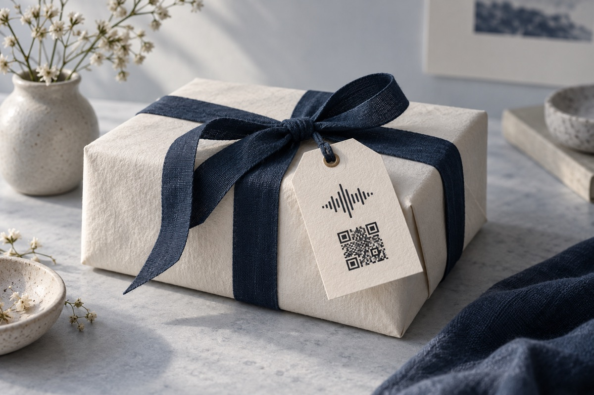

On a card.
Turn a simple note into something they can hear.
Turn a little of yourself into something they can keep. A voice message, tucked into a QR code.
Make it personalComing to iPhone · 3 free voice QR codes

Your voice. Inside the code.
No upload. No audio hosting.
Listen offline with Talqo.
A birthday wish. A thank-you. The story behind a photograph. Let them hear it from you.
Turn a simple note into something they can hear.
Add a personal voice to life’s special moments.
Bring a photograph to life with the story behind it.
AI-generated illustrative scenes; QR patterns are not functional examples.
Record up to 25 seconds of your voice in the Talqo app, or import and trim an audio file.
Preview your compressed audio to make sure it sounds right.
Export a high-quality QR code as PNG, SVG or PDF. The recipient uses Talqo to hear your voice.
Your first 3 voice QR codes are free. Listening always is.
Planned US launch prices. Packs stay on the purchasing device and do not expire. Subscriptions renew automatically; cancel through Apple. Final pricing and availability are confirmed by the App Store.
Yes. Scan or import the code in Talqo to listen offline. The audio is inside the QR itself, so exported codes remain playable after a generation subscription ends.
Only a successfully generated new voice QR uses one credit. Listening, scanning, sharing and re-exporting are free. An active subscription preserves your existing credits.
Coming to iPhone.
Questions? Get in touch.